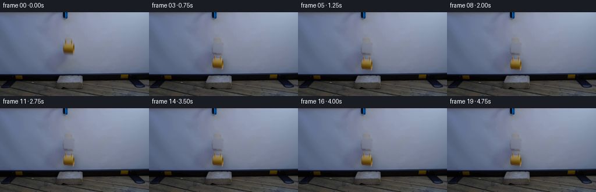
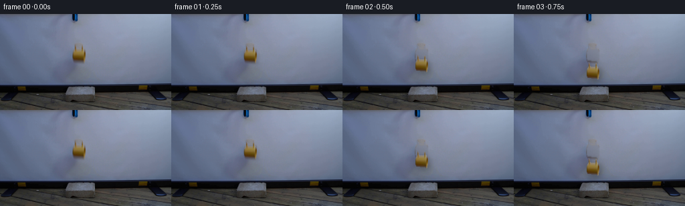
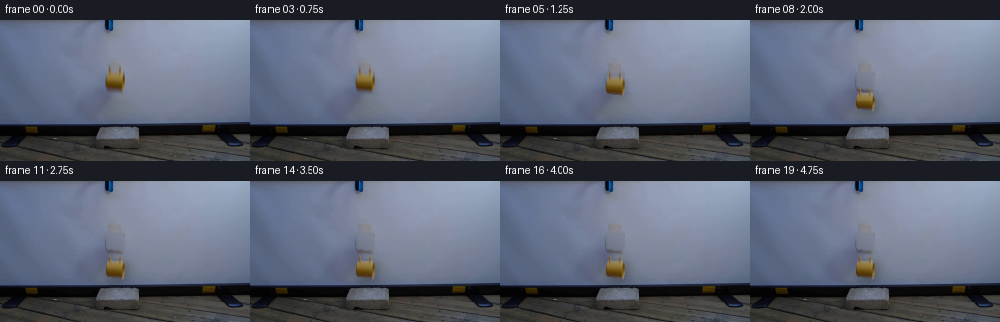
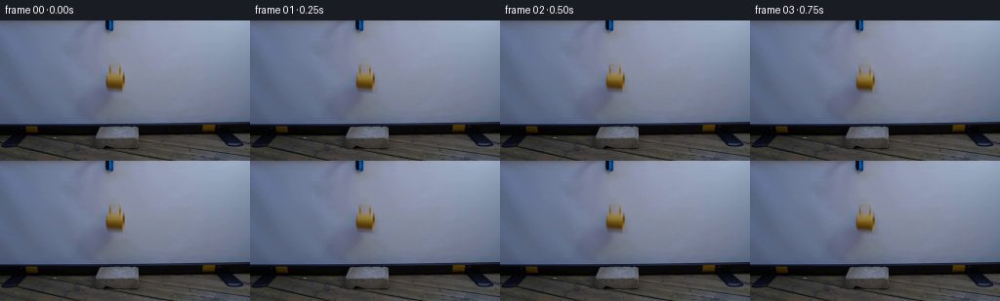
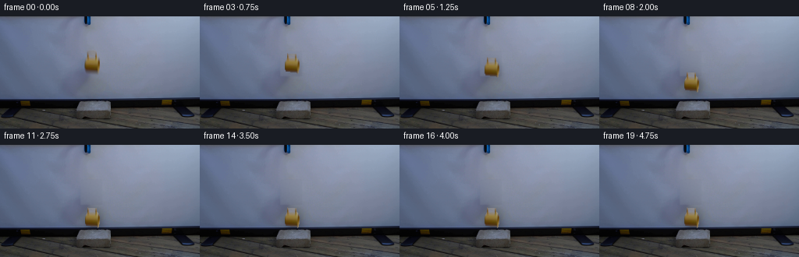
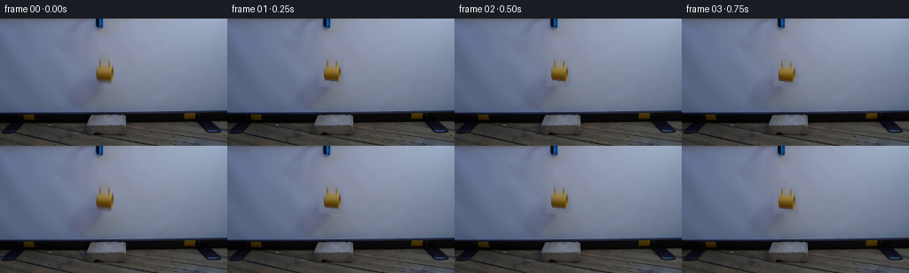

CODING AGENTS AS PIXEL WORLD MODELS
traex/DeepSeek-V4.1-Flash · 0125
点击播放 · 原生 RGB 像素
逐轮保存的候选
回放视频、检查图与代码变化。
每份候选均可单独播放。实际图片检查记录在下方工具轨迹中。
候选 01播放与检查图
点击播放 · 原生 RGB 像素


展开代码变化
--- 上一保存版本
+++ 本次保存版本
@@ -0,0 +1,223 @@
+from pathlib import Path
+
+import numpy as np
+from PIL import Image, ImageFilter
+
+import artifact_io
+
+
+CASE_DIR = Path(__file__).resolve().parent
+WIDTH, HEIGHT, FRAME_COUNT, FPS = 256, 144, 20, 4
+
+
+def smoothstep(value):
+ value = np.clip(value, 0.0, 1.0)
+ return value * value * (3.0 - 2.0 * value)
+
+
+def make_mug_layer(plate):
+ """Extract the yellow mug and its shaded rim as a clean rigid layer."""
+ rgb = plate.astype(np.float32)
+ r, g, b = rgb[:, :, 0], rgb[:, :, 1], rgb[:, :, 2]
+
+ # The warm ceramic body is isolated from the cool screen and gripper.
+ warm = (r - b > 8.0) & (r > 60.0)
+ candidate = np.zeros_like(warm)
+ candidate[44:75, 103:132] = warm[44:75, 103:132]
+
+ # Keep the largest connected component, then close the two narrow rim
+ # highlights into the body without pulling in the gripper.
+ seen = np.zeros_like(candidate)
+ components = []
+ for seed_y, seed_x in zip(*np.where(candidate)):
+ if seen[seed_y, seed_x]:
+ continue
+ stack = [(seed_y, seed_x)]
+ seen[seed_y, seed_x] = True
+ points = []
+ while stack:
+ y, x = stack.pop()
+ points.append((y, x))
+ for dy, dx in ((1, 0), (-1, 0), (0, 1), (0, -1)):
+ ny, nx = y + dy, x + dx
+ if (
+ 0 <= ny < HEIGHT
+ and 0 <= nx < WIDTH
+ and candidate[ny, nx]
+ and not seen[ny, nx]
+ ):
+ seen[ny, nx] = True
+ stack.append((ny, nx))
+ components.append(points)
+ points = max(components, key=len)
+ mask = np.zeros((HEIGHT, WIDTH), dtype=np.uint8)
+ for y, x in points:
+ mask[y, x] = 255
+
+ image = Image.fromarray(mask)
+ image = image.filter(ImageFilter.MaxFilter(3))
+ image = image.filter(ImageFilter.MinFilter(3))
+ mask = np.asarray(image)
+
+ # Remove any stray pixels outside the mug's compact source box.
+ keep = np.zeros_like(mask)
+ keep[44:74, 106:130] = 255
+ mask = np.minimum(mask, keep)
+ return mask
+
+
+def inpaint_plate(plate, mask):
+ """Reconstruct the gently shaded projection screen behind the mug."""
+ result = plate.astype(np.float32).copy()
+ h, w = mask.shape
+ valid = mask == 0
+ yy, xx = np.mgrid[0:h, 0:w]
+
+ # Fit a local quadratic light field on nearby unobstructed screen pixels.
+ sample = valid & (yy >= 36) & (yy <= 82) & (xx >= 90) & (xx <= 145)
+ sy = (yy[sample] - 59.0) / 23.0
+ sx = (xx[sample] - 116.0) / 27.0
+ design = np.stack(
+ [np.ones_like(sx), sx, sy, sx * sx, sx * sy, sy * sy], axis=1
+ )
+ target_y = yy[mask != 0]
+ target_x = xx[mask != 0]
+ ty = (target_y - 59.0) / 23.0
+ tx = (target_x - 116.0) / 27.0
+ target_design = np.stack(
+ [np.ones_like(tx), tx, ty, tx * tx, tx * ty, ty * ty], axis=1
+ )
+ for channel in range(3):
+ coeff, *_ = np.linalg.lstsq(
+ design, plate[:, :, channel][sample].astype(np.float64), rcond=None
+ )
+ result[:, :, channel][mask != 0] = (
+ target_design @ coeff
+ )
+
+ # Re-introduce fine sensor texture at the same strength as the screen.
+ rng = np.random.default_rng(125)
+ noise = rng.normal(0.0, 1.15, size=(HEIGHT, WIDTH, 1))
+ noise = noise + rng.normal(0.0, 0.8, size=(HEIGHT, WIDTH, 3))
+ result[mask != 0] += noise[mask != 0]
+
+ # A tiny Gaussian blend removes the inpaint boundary.
+ clean = np.clip(result, 0, 255).astype(np.uint8)
+ blurred = np.asarray(
+ Image.fromarray(clean).filter(ImageFilter.GaussianBlur(1.15))
+ ).astype(np.float32)
+ soft_mask = np.asarray(
+ Image.fromarray(mask).filter(ImageFilter.GaussianBlur(1.5))
+ ).astype(np.float32) / 255.0
+ soft_mask = np.clip(soft_mask * 1.4, 0.0, 1.0)
+ out = clean.astype(np.float32) * (1.0 - soft_mask[:, :, None])
+ out += blurred * soft_mask[:, :, None]
+ return np.clip(out, 0, 255).astype(np.uint8)
+
+
+def shifted_layer(layer, mask, dx, dy):
+ """Translate a premultiplied object layer by integer pixels."""
+ shifted = np.zeros_like(layer)
+ shifted_mask = np.zeros_like(mask)
+ h, w = mask.shape
+ src_x0, src_x1 = max(0, -dx), min(w, w - dx)
+ src_y0, src_y1 = max(0, -dy), min(h, h - dy)
+ dst_x0, dst_x1 = src_x0 + dx, src_x1 + dx
+ dst_y0, dst_y1 = src_y0 + dy, src_y1 + dy
+ shifted[dst_y0:dst_y1, dst_x0:dst_x1] = layer[
+ src_y0:src_y1, src_x0:src_x1
+ ]
+ shifted_mask[dst_y0:dst_y1, dst_x0:dst_x1] = mask[
+ src_y0:src_y1, src_x0:src_x1
+ ]
+ return shifted, shifted_mask
+
+
+def composite_mug(frame, layer, alpha, dx, dy, contact, time):
+ """Composite the mug plus its contact shadow and restrained motion blur."""
+ result = frame.astype(np.float32)
+ h, w = alpha.shape
+
+ # Shadow is cast on the screen behind the falling mug and strengthens as
+ # the mug approaches the brick top.
+ shadow_strength = 0.07 + 0.20 * contact
+ shadow_radius = 2.4 + 2.2 * contact
+ shadow_mask = np.asarray(
+ Image.fromarray((alpha * 255).astype(np.uint8)).filter(
+ ImageFilter.GaussianBlur(shadow_radius)
+ )
+ ).astype(np.float32) / 255.0
+ shadow_mask, _ = shifted_layer(
+ shadow_mask[:, :, None], shadow_mask, dx + 3, dy + 4
+ )
+ result *= 1.0 - shadow_strength * shadow_mask
+
+ # Very light horizontal blur at the fastest part of the fall.
+ speed = np.clip((time - 0.22) / 0.32, 0.0, 1.0)
+ motion = int(round(1.2 * speed * (1.0 - contact)))
+ if motion:
+ blurred = np.asarray(
+ Image.fromarray(layer.astype(np.uint8)).filter(
+ ImageFilter.GaussianBlur((motion, 0.45))
+ )
+ ).astype(np.float32)
+ layer = layer * 0.76 + blurred * 0.24
+
+ shifted, shifted_alpha = shifted_layer(layer, alpha, dx, dy)
+ weight = shifted_alpha[:, :, None]
+ result = result * (1.0 - weight) + shifted * weight
+
+ # Thin reflected bounce light under the base while airborne.
+ return np.clip(result, 0, 255).astype(np.uint8)
+
+
+def mug_motion(frame_index):
+ """Five-second real-time release with gravity, impact, and a small settle."""
+ t = frame_index / FPS
+ release = 0.18
+ impact = 0.62
+ if t <= release:
+ return 0, 0, 0.0
+ if t < impact:
+ u = (t - release) / (impact - release)
+ return 0, int(round(28.0 * u * u)), smoothstep(u)
+ settle_time = t - impact
+ if settle_time < 0.20:
+ lift = 2.0 * np.sin(np.pi * settle_time / 0.20)
+ return 0, int(round(28.0 - lift)), 1.0
+ return 0, 28, 1.0
+
+
+def main():
+ plate = np.asarray(Image.open(CASE_DIR / "first_frame.png").convert("RGB"))
+ assert plate.shape == (HEIGHT, WIDTH, 3)
+
+ mask = make_mug_layer(plate)
+ background = inpaint_plate(plate, mask)
+
+ # Keep a one-pixel soft edge from the original plate for realistic contact
+ # with the screen, while preserving the source pixels inside the object.
+ alpha = np.asarray(
+ Image.fromarray(mask).filter(ImageFilter.GaussianBlur(0.55))
+ ).astype(np.float32) / 255.0
+ alpha = np.clip((alpha - 0.13) / 0.74, 0.0, 1.0)
+ layer = plate.astype(np.float32)
+
+ frames = []
+ for index in range(FRAME_COUNT):
+ if index == 0:
+ frame = plate.copy()
+ else:
+ dx, dy, contact = mug_motion(index)
+ frame = composite_mug(
+ background, layer, alpha, dx, dy, contact, index / FPS
+ )
+ frames.append(frame)
+
+ frames = np.stack(frames).astype(np.uint8)
+ assert np.array_equal(frames[0], plate)
+ artifact_io.save(frames, CASE_DIR)
+
+
+if __name__ == "__main__":
+ main()
候选 02播放与检查图
点击播放 · 原生 RGB 像素


展开代码变化
--- 上一保存版本
+++ 本次保存版本
@@ -174,18 +174,19 @@
def mug_motion(frame_index):
"""Five-second real-time release with gravity, impact, and a small settle."""
t = frame_index / FPS
- release = 0.18
- impact = 0.62
+ release = 0.50
+ impact = 2.25
+ fall = 28.0
if t <= release:
return 0, 0, 0.0
if t < impact:
u = (t - release) / (impact - release)
- return 0, int(round(28.0 * u * u)), smoothstep(u)
+ return 0, int(round(fall * u * u)), smoothstep(u)
settle_time = t - impact
- if settle_time < 0.20:
- lift = 2.0 * np.sin(np.pi * settle_time / 0.20)
- return 0, int(round(28.0 - lift)), 1.0
- return 0, 28, 1.0
+ if settle_time < 0.42:
+ lift = 1.8 * np.sin(np.pi * settle_time / 0.42)
+ return 0, int(round(fall - lift)), 1.0
+ return 0, int(fall), 1.0
def main():
候选 03播放与检查图
点击播放 · 原生 RGB 像素

展开代码变化
--- 上一保存版本
+++ 本次保存版本
@@ -16,54 +16,49 @@
def make_mug_layer(plate):
- """Extract the yellow mug and its shaded rim as a clean rigid layer."""
+ """Extract the complete mug silhouette, including rim and contact shadow."""
rgb = plate.astype(np.float32)
r, g, b = rgb[:, :, 0], rgb[:, :, 1], rgb[:, :, 2]
-
- # The warm ceramic body is isolated from the cool screen and gripper.
- warm = (r - b > 8.0) & (r > 60.0)
- candidate = np.zeros_like(warm)
- candidate[44:75, 103:132] = warm[44:75, 103:132]
-
- # Keep the largest connected component, then close the two narrow rim
- # highlights into the body without pulling in the gripper.
- seen = np.zeros_like(candidate)
- components = []
- for seed_y, seed_x in zip(*np.where(candidate)):
- if seen[seed_y, seed_x]:
- continue
- stack = [(seed_y, seed_x)]
- seen[seed_y, seed_x] = True
- points = []
- while stack:
- y, x = stack.pop()
- points.append((y, x))
- for dy, dx in ((1, 0), (-1, 0), (0, 1), (0, -1)):
- ny, nx = y + dy, x + dx
- if (
- 0 <= ny < HEIGHT
- and 0 <= nx < WIDTH
- and candidate[ny, nx]
- and not seen[ny, nx]
- ):
- seen[ny, nx] = True
- stack.append((ny, nx))
- components.append(points)
- points = max(components, key=len)
mask = np.zeros((HEIGHT, WIDTH), dtype=np.uint8)
- for y, x in points:
- mask[y, x] = 255
+
+ # Rows 46-52 contain the ceramic rim and the two dark inner edges.
+ warm = (r - b > 7.0) & (r > 48.0)
+ mask[46:53, 109:128][warm[46:53, 109:128]] = 255
+
+ # The body has a nearly constant, warm ceramic tone. Its base widens by a
+ # few pixels and the contact shadow occupies rows 69-72.
+ mask[52:73, 108:129] = 255
+ mask[53:71, 109:128] = 255
+
+ # Recover the rounded silhouette on each row from the local light field.
+ for y in range(52, 73):
+ left, right = 108, 128
+ if y >= 54:
+ left = 107
+ if y >= 56:
+ left = 106
+ if y >= 57:
+ left = 105
+ if y >= 58:
+ left = 104
+ if y <= 54:
+ right = 127
+ if y <= 55:
+ right = 128
+ if y <= 56:
+ right = 129
+ if y >= 68:
+ right -= 1
+ mask[y, left : right + 1] = 255
+
+ # Round the top corners and trim the lower-right anti-aliased edge.
+ mask[46:48, 109:112] = 0
+ mask[46:47, 125:128] = 0
+ mask[70:73, 126:129] = 0
image = Image.fromarray(mask)
- image = image.filter(ImageFilter.MaxFilter(3))
- image = image.filter(ImageFilter.MinFilter(3))
- mask = np.asarray(image)
-
- # Remove any stray pixels outside the mug's compact source box.
- keep = np.zeros_like(mask)
- keep[44:74, 106:130] = 255
- mask = np.minimum(mask, keep)
- return mask
+ image = image.filter(ImageFilter.GaussianBlur(0.38))
+ return np.asarray(image)
def inpaint_plate(plate, mask):
@@ -176,7 +171,7 @@
t = frame_index / FPS
release = 0.50
impact = 2.25
- fall = 28.0
+ fall = 34.0
if t <= release:
return 0, 0, 0.0
if t < impact:
候选 04播放与检查图
候选 05播放与检查图
点击播放 · 原生 RGB 像素


展开代码变化
--- 上一保存版本
+++ 本次保存版本
@@ -16,49 +16,21 @@
def make_mug_layer(plate):
- """Extract the complete mug silhouette, including rim and contact shadow."""
+ """Extract the complete mug silhouette, including its hollow rim."""
rgb = plate.astype(np.float32)
r, g, b = rgb[:, :, 0], rgb[:, :, 1], rgb[:, :, 2]
mask = np.zeros((HEIGHT, WIDTH), dtype=np.uint8)
- # Rows 46-52 contain the ceramic rim and the two dark inner edges.
+ # The warm ceramic body gives a precise row-by-row silhouette. Filling
+ # between the two rim edges retains the dark mug interior without pulling
+ # in the screen or the cast shadow below the base.
warm = (r - b > 7.0) & (r > 48.0)
- mask[46:53, 109:128][warm[46:53, 109:128]] = 255
-
- # The body has a nearly constant, warm ceramic tone. Its base widens by a
- # few pixels and the contact shadow occupies rows 69-72.
- mask[52:73, 108:129] = 255
- mask[53:71, 109:128] = 255
-
- # Recover the rounded silhouette on each row from the local light field.
- for y in range(52, 73):
- left, right = 108, 128
- if y >= 54:
- left = 107
- if y >= 56:
- left = 106
- if y >= 57:
- left = 105
- if y >= 58:
- left = 104
- if y <= 54:
- right = 127
- if y <= 55:
- right = 128
- if y <= 56:
- right = 129
- if y >= 68:
- right -= 1
- mask[y, left : right + 1] = 255
-
- # Round the top corners and trim the lower-right anti-aliased edge.
- mask[46:48, 109:112] = 0
- mask[46:47, 125:128] = 0
- mask[70:73, 126:129] = 0
-
- image = Image.fromarray(mask)
- image = image.filter(ImageFilter.GaussianBlur(0.38))
- return np.asarray(image)
+ for y in range(46, 73):
+ xs = np.flatnonzero(warm[y, 104:132]) + 104
+ if len(xs) == 0:
+ continue
+ mask[y, xs.min() : xs.max() + 1] = 255
+ return mask
def inpaint_plate(plate, mask):
@@ -189,7 +161,9 @@
assert plate.shape == (HEIGHT, WIDTH, 3)
mask = make_mug_layer(plate)
- background = inpaint_plate(plate, mask)
+ erase_mask = np.zeros_like(mask)
+ erase_mask[44:77, 103:131] = 255
+ background = inpaint_plate(plate, erase_mask)
# Keep a one-pixel soft edge from the original plate for realistic contact
# with the screen, while preserving the source pixels inside the object.
可观测工具轨迹
实际执行的命令与返回图片。
命令 1exit 0
/bin/bash -lc "pwd && rg --files -g '"'!*.mp4'"' -g '"'!*.mov'"' | sort | head -200"
命令 2exit 0
/bin/bash -lc "printf '%s\\n' '--- prompt.txt ---'; sed -n '1,240p' prompt.txt; printf '%s\\n' '--- GENERATION_RULES.md ---'; sed -n '1,280p' GENERATION_RULES.md"
命令 3exit 0
/bin/bash -lc "find . -maxdepth 2 -type f -printf '%p %s bytes\\n' | sort | head -200"
命令 4exit 0
/bin/bash -lc "python - <<'PY'
from PIL import Image
import numpy as np
im=Image.open('first_frame.png').convert('RGB')
a=np.asarray(im)
print('size', im.size, 'mode', im.mode, 'shape', a.shape)
print('global mean',a.mean((0,1)), 'min',a.min((0,1)), 'max',a.max((0,1)))
# report bbox for broad color masks
r,g,b=a[:,:,0],a[:,:,1],a[:,:,2]
masks={
'yellow':(r>120)&(g>90)&(b<80)&(r>g*1.05),
'blue':(b>60)&(b>r*1.2)&(b>g*1.05),
'dark':(r<60)&(g<60)&(b<60),
'red_brick':(r>70)&(r>g*1.15)&(r>b*1.2),
'white':(r>180)&(g>180)&(b>180),
}
for n,m in masks.items():
ys,xs=np.where(m)
print(n, len(xs), 'bbox', (xs.min(),ys.min(),xs.max(),ys.max()) if len(xs) else None)
# 64x36 color-coded luminance map
small=np.asarray(im.resize((64,36)))
chars=' .,:;irsXA253hMHGS#9B&@'
y=(0.2126*small[:,:,0]+0.7152*small[:,:,1]+0.0722*small[:,:,2])/255
idx=np.clip((y*(len(chars)-1)).astype(int),0,len(chars)-1)
for row in idx:
print(''.join(chars[i] for i in row))
PY"命令 5exit 0
/bin/bash -lc "sed -n '1,260p' artifact_io.py"
命令 6exit 0
/bin/bash -lc "sed -n '1,260p' player_template.html"
命令 7exit 0
/bin/bash -lc "python - <<'PY'
from PIL import Image
im=Image.open('first_frame.png').convert('RGB')
# palette top colors
from collections import Counter
c=Counter(im.getdata())
for rgb,n in c.most_common(40): print(rgb,n)
PY"命令 8exit 0
/bin/bash -lc "python - <<'PY'
from PIL import Image
import numpy as np
im=np.array(Image.open('first_frame.png').convert('RGB'))
# HSV
from colorsys import rgb_to_hsv
hsv=np.zeros(im.shape,dtype=float)
mx=im.max(2); mn=im.min(2); df=mx-mn
# vectorized hsv hue only
r,g,b=[im[:,:,i].astype(float)/255 for i in range(3)]
h=np.zeros_like(r); s=np.zeros_like(r); v=mx/255
d=df.astype(float)
nz=d>0
# standard
idx=(mx==im[:,:,0])&nz; h[idx]=((g[idx]-b[idx])/d[idx])%6
idx=(mx==im[:,:,1])&nz; h[idx]=(b[idx]-r[idx])/d[idx]+2
idx=(mx==im[:,:,2])&nz; h[idx]=(r[idx]-g[idx])/d[idx]+4
h/=6
s[nz]=d[nz]/mx[nz]
# print mask ascii crop x=80..150, y=35..105, every pixel, symbols from dominant classes
chars=[]
for y in range(30,110):
row=''
for x in range(70,160):
R,G,B=im[y,x]; H=h[y,x]; S=s[y,x]; V=v[y,x]
if R>110 and G>80 and B<95 and R>G*1.02: c='Y'
elif R<35 and G<35 and B<40: c='#'
elif B>R*1.35 and B>G*1.08: c='B'
elif B>R*1.15 and B>G*1.02: c='b'
elif R>G*1.15 and G<B*1.1: c='r'
elif V>0.68: c='.'
elif V>0.52: c=':'
elif V>0.38: c='-'
elif V>0.25: c=','
else: c=' '
row+=c
print(f'{y:03d} '+row)
print(' '+''.join(str((x//10)%10) for x in range(70,160)))
print(' '+''.join(str(x%10) for x in range(70,160)))
PY"命令 9exit 0
/bin/bash -lc "python - <<'PY'
from PIL import Image
import numpy as np
im=Image.open('first_frame.png').convert('RGB')
q=im.quantize(colors=20, method=Image.Quantize.MEDIANCUT)
pal=np.array(q.getpalette()).reshape(-1,3)
a=np.array(q)
for i,c in enumerate(pal): print(i,tuple(c), int((a==i).sum()))
chars='0123456789ABCDEFGHIJ'
# 128x72 via nearest downsample, center sample
for y in range(0,144,2):
print(f'{y:03d} '+''.join(chars[a[y,x]] for x in range(0,256,2)))
print(' '+''.join(str((x//20)%10) for x in range(0,256,2)))
PY"命令 10exit 0
/bin/bash -lc "python - <<'PY'
from PIL import Image
import numpy as np
im=np.array(Image.open('first_frame.png').convert('RGB'))
# Detailed crop 100..142, 42..78 with color letters based on clusters, plus exact values sample
for y in range(42,79):
print(f'{y:03d}', ' '.join(f'{im[y,x,0]:02x}{im[y,x,1]:02x}{im[y,x,2]:02x}' for x in range(100,143)))
PY"命令 11exit 0
/bin/bash -lc "python - <<'PY'
from PIL import Image
import numpy as np
im=Image.open('first_frame.png').convert('RGB')
print(im.info)
# connected comps for non-background potential objects in upper region via local chroma/deviation
A=np.asarray(im).astype(float)
# Sobel-ish local edge via gradients
lum=A@np.array([.299,.587,.114])
gx=np.abs(np.diff(lum,axis=1,prepend=lum[:,:1])); gy=np.abs(np.diff(lum,axis=0,prepend=lum[:1,:]))
e=np.clip(gx+gy,0,255)
print('edges top', np.percentile(e[:100], [50,75,90,95,99]), e[:100].max())
# sample coarse 4x4 means in top center 80:160,30:110, encode luma and color dominant
for y in range(36,104,2):
row=''
for x in range(80,152,1):
R,G,B=A[y,x]
if R>100 and G>65 and B<95 and R>G*1.03: ch='Y'
elif R>70 and G>45 and B<55: ch='y'
elif B>R*1.5 and B>G*1.25: ch='b'
elif B>R*1.28 and B>G*1.08: ch='d'
elif B>R*1.1 and B>G*1.02: ch='s'
elif R<30 and G<30 and B<35: ch='#'
elif R<55 and G<55 and B<65: ch='X'
elif lum[y,x]<85: ch='x'
elif lum[y,x]<120: ch='-'
elif lum[y,x]<150: ch='.'
else: ch=' '
row+=ch
print(f'{y:03d} {row}')
print(' '+''.join(str((x//10)%10) for x in range(80,152)))
print(' '+''.join(str(x%10) for x in range(80,152)))
PY"命令 12exit 0
/bin/bash -lc "python - <<'PY'
from PIL import Image
import numpy as np
A=np.array(Image.open('first_frame.png').convert('RGB')).astype(float)
# row and col stats
for y in range(0,144,4):
r=A[y]
print(f'y={y:03d} mean={r.mean(0).round(1)} std={r.std(0).round(1)} min={r.min(0)} max={r.max(0)}')
print('COLS')
for x in range(0,256,8):
c=A[:,x]
print(f'x={x:03d} mean={c.mean(0).round(1)} std={c.std(0).round(1)} min={c.min(0)} max={c.max(0)}')
PY"命令 13exit 0
/bin/bash -lc "python - <<'PY'
from PIL import Image
import numpy as np
A=np.array(Image.open('first_frame.png').convert('RGB')).astype(float)
# color channel gradients top area summarize edges bbox by threshold
lum=A@np.array([.299,.587,.114])
gx=np.abs(np.diff(lum,axis=1,prepend=lum[:,:1])); gy=np.abs(np.diff(lum,axis=0,prepend=lum[:1,:]))
for t in [3,5,8,12,20,30,50]:
m=(gx+gy)>t
print(t,m.sum())
# row segments x where background deviation or chroma
for y in range(0,144,2):
r=A[y]
m=((r[:,2]-r[:,0]>35)&(r[:,1]-r[:,0]>8)) | ((r[:,0]-r[:,2]>5)&(r[:,0]>35))
# segments > 2
seg=[]; start=None
for x,v in enumerate(m):
if v and start is None:start=x
if start is not None and (not v or x==255):
end=x if not v else x+1
if end-start>=2:seg.append((start,end-1))
start=None
print(f'{y:03d}',seg)
PY"命令 14exit 0
/bin/bash -lc "python - <<'PY'
from PIL import Image
import numpy as np
A=np.array(Image.open('first_frame.png').convert('RGB')).astype(float)
lum=A@np.array([.299,.587,.114])
chars=' .:-=+*#%@'
for y in range(38,86):
row=''
for x in range(95,145):
L=lum[y,x]
# invert threshold buckets 30..160
i=int(np.clip((L-25)/15,0,len(chars)-1))
row+=chars[i]
print(f'{y:03d} {row}')
print(' '+''.join(str((x//10)%10) for x in range(95,145)))
print(' '+''.join(str(x%10) for x in range(95,145)))
PY"命令 15exit 0
/bin/bash -lc "python - <<'PY'
from PIL import Image
import numpy as np
A=np.array(Image.open('first_frame.png').convert('RGB')).astype(float)
# test correlations and PCA to see background structure; print low-rank residual bbox
# SVD on all pixels after rgb scaling
X=A.reshape(-1,3)
U,S,Vt=np.linalg.svd(X-X.mean(0), full_matrices=False)
print('singular',S, 'ratio',S**2/(S**2).sum())
print('V',Vt)
# For mug crop, inspect chroma / light residual relative to row smooth fit
for y in range(44,74,2):
vals=[]
for x in range(105,132):
R,G,B=A[y,x]
vals.append(f'{R:.0f},{G:.0f},{B:.0f}')
print(y,' '.join(vals))
PY"命令 16exit 0
/bin/bash -lc "python - <<'PY'
from PIL import Image
import numpy as np
A=np.array(Image.open('first_frame.png').convert('RGB')).astype(float)
# List suspicious gray/yellow mug bounding x 108..128 y 45..71. Show edge and segmentation based on a local background estimate from y=42 and right side.
# approximate smooth background via median filter maybe inspect CIE saturation and hue
import colorsys
for y in range(42,76):
m=[]
for x in range(95,145):
R,G,B=A[y,x]/255
h,s,v=colorsys.rgb_to_hsv(R,G,B)
# warm object: hue < 0.18 or red excess
if (R-B>0.03 and R>0.15) or (s<0.08 and v<0.5): m.append('X')
elif v<0.45:m.append('x')
elif s>0.16:m.append('c')
else:m.append('.')
print(f'{y:03d}', ''.join(m))
PY"命令 17exit 0
/bin/bash -lc "python - <<'PY'
from PIL import Image
import numpy as np
A=np.array(Image.open('first_frame.png').convert('RGB')).astype(float)
# print crop at native but rgb categories / exact color blocks. Also compare 1st frame source maybe encoded JPEG artifacts? Unique count.
print('unique',len(np.unique(A.reshape(-1,3),axis=0)))
# estimate local background using nearest border samples, print object mask candidate based on color distance to median around perimeter rectangle x104..130 y43..74
Y0,Y1,X0,X1=42,75,103,131
# fit plane/channel polynomial excluding candidate mask? iterative robust fit 2d degree3 all region expanded, but object only warm -> use green/blue relation
# use r-g / g-b map
for y in range(Y0,Y1):
s=''
for x in range(X0,X1):
R,G,B=A[y,x]
d=R-B
if d>15:s+='O'
elif d>5:s+='o'
elif R<40:s+='#'
elif R<70:s+='x'
else:s+='.'
print(f'{y:03d}',s)
PY"命令 18exit 0
/bin/bash -lc "python - <<'PY'
from PIL import Image
import numpy as np
A=np.array(Image.open('first_frame.png').convert('RGB')).astype(float)
# Estimate background under mug by linear interpolation between y=42 and y=76; print resulting crop.
out=[]
for y in range(42,76):
s=''
for x in range(103,131):
R,G,B=A[y,x]
# object if R-B>8 and R>60
if R-B>8 and R>60:s+='X'
elif R<50:s+='#'
elif R<85:s+='x'
else:s+='.'
print(f'{y:03d}',s)
PY"命令 19exit 0
/bin/bash -lc "python - <<'PY'
from PIL import Image
import numpy as np
A=np.array(Image.open('first_frame.png').convert('RGB')).astype(float)
# print grayscale ascii crop x100-140 y40-90; values colored maybe nearest labels
for y in range(40,90):
s=''
for x in range(100,140):
R,G,B=A[y,x]
if R-B>8 and R>60:c='Y'
elif R<20:c='#'
elif R<50:c='@'
elif R<80:c='x'
elif R<105:c='o'
elif R<125:c='-'
elif R<140:c='.'
else:c=' '
s+=c
print(f'{y:03d} {s}')
PY"命令 20exit 0
/bin/bash -lc "python - <<'PY'
from PIL import Image
import numpy as np
A=np.array(Image.open('first_frame.png').convert('RGB'))
# derive object mask from color condition within crop; list exact mask rows
mask=(A[:,:,0].astype(int)-A[:,:,2].astype(int)>8)&(A[:,:,0]>60)
# restrict component bbox seed y=60 x=115
from collections import deque
seen=np.zeros(mask.shape,bool); comps=[]
for y,x in zip(*np.where(mask)):
if seen[y,x]:continue
q=[(y,x)];seen[y,x]=1; pts=[]
while q:
yy,xx=q.pop();pts.append((yy,xx))
for dy,dx in ((1,0),(-1,0),(0,1),(0,-1)):
ny,nx=yy+dy,xx+dx
if 0<=ny<144 and 0<=nx<256 and mask[ny,nx] and not seen[ny,nx]: seen[ny,nx]=1;q.append((ny,nx))
if len(pts)>5:
ys=[p[0] for p in pts];xs=[p[1] for p in pts]
comps.append((len(pts),min(xs),min(ys),max(xs),max(ys)))
print(sorted(comps,reverse=True)[:20])
# specific crop mask rows as ranges
for y in range(44,75):
xs=np.where(mask[y,90:150])[0]+90
if len(xs): print(y,xs.min(),xs.max(),list(xs))
PY"命令 21exit 0
/bin/bash -lc "python - <<'PY'
from PIL import Image
import numpy as np
A=np.array(Image.open('first_frame.png').convert('RGB')).astype(float)
lum=A@np.array([.299,.587,.114])
# edge magnitude at full res then max pool 2x2, print full 128x72
gx=np.abs(np.diff(lum,axis=1,prepend=lum[:,:1])); gy=np.abs(np.diff(lum,axis=0,prepend=lum[:1,:]))
e=gx+gy
# use threshold symbols
for y in range(0,144,2):
s=''
for x in range(0,256,2):
v=e[y:y+2,x:x+2].max()
s += '#' if v>50 else '@' if v>25 else '*' if v>12 else '+' if v>6 else '.' if v>2 else ' '
print(f'{y:03d}|{s}|')
PY"命令 22exit 1
/bin/bash -lc 'python generate.py'
命令 23exit 1
/bin/bash -lc 'python generate.py'
命令 24exit 0
/bin/bash -lc 'python generate.py'
命令 25exit 0
/bin/bash -lc "find . -maxdepth 2 -type f -printf '%p %s\\n' | sort | head -80"
命令 26exit 0
/bin/bash -lc "python - <<'PY'
from PIL import Image
import numpy as np
frames=np.stack([np.array(Image.open(f'frames/{i:02d}.png')) for i in range(20)])
first=np.array(Image.open('first_frame.png'))
print('shape',frames.shape,'dtype',frames.dtype)
print('frame0 exact',np.array_equal(frames[0],first),'maxdiff',np.abs(frames[0].astype(int)-first.astype(int)).max())
for i in range(20):
diff=np.abs(frames[i].astype(int)-frames[i-1].astype(int)) if i else np.zeros((144,256,3),int)
print(i,'mean',frames[i].mean().round(3),'changed prev',np.count_nonzero(diff),'max',diff.max())
PY"命令 27exit 0
/bin/bash -lc "command -v chafa || true; command -v viu || true; command -v jp2 || true; command -v ffmpeg || true; python - <<'PY' import importlib.util for n in ['cv2','scipy','skimage','imageio','matplotlib']: print(n, bool(importlib.util.find_spec(n))) PY"
命令 28exit 0
/bin/bash -lc "python - <<'PY'
from PIL import Image
import numpy as np
A=np.array(Image.open('first_frame.png').convert('RGB')).astype(int)
# Estimate brick top: rows 103..121, print mean and horizontal color transitions
for y in range(100,126):
row=A[y]
# report percentiles and x where luma changes strongly
print(y, 'mean',row.mean(0).round(1), 'luma',round((row@[.299,.587,.114]).mean(),1), 'minmax',row.min(),row.max())
PY"命令 29exit 0
/bin/bash -lc "python - <<'PY'
from PIL import Image
import numpy as np
# Create nearest-neighbor 4x crop contact sheet for mug/inpaint area frames 0,1,2,3,4,8,12,19
ims=[]
for i in [0,1,2,3,4,8,12,19]:
a=np.array(Image.open(f'frames/{i:02d}.png').convert('RGB'))
crop=a[40:120,90:145]
ims.append(Image.fromarray(crop).resize((220,320),Image.Resampling.NEAREST))
out=Image.new('RGB',(220*4,320*2))
for k,im in enumerate(ims):out.paste(im,((k%4)*220,(k//4)*320))
out.save('.tmp/crops.png')
# print pixel maps of masks/bg around crop
PY"命令 30exit 0
/bin/bash -lc "python - <<'PY'
from PIL import Image
import numpy as np
A=np.array(Image.open('frames/05.png').convert('RGB')).astype(float)
# print rgb grid in inpaint bbox to inspect texture; compare row means inside vs outside
print('row means inside/outside')
for y in range(42,76):
inside=A[y,108:130].mean(0); left=A[y,94:107].mean(0); right=A[y,131:144].mean(0)
print(y, inside.round(1),left.round(1),right.round(1), 'dL',round((inside-left).mean(),1),round((inside-right).mean(),1))
# Save brightened crop maybe no visual
PY"命令 31exit 0
/bin/bash -lc "python - <<'PY'
from PIL import Image
import numpy as np
# summarize gradients between adjacent background columns to identify scene's projected shadows
A=np.array(Image.open('first_frame.png').convert('RGB')).astype(float)
for x in range(80,150,2):
print(x, A[36:100,x].mean(0).round(1), A[36:100,x+1].mean(0).round(1), 'diff',round((A[36:100,x+1]-A[36:100,x]).mean(),2))
PY"命令 32exit 0
/bin/bash -lc "python generate.py && python - <<'PY'
from PIL import Image
import numpy as np
F=np.stack([np.array(Image.open(f'frames/{i:02d}.png').convert('RGB')) for i in range(20)])
P=np.array(Image.open('first_frame.png').convert('RGB'))
print('exact',np.array_equal(F[0],P),'shape',F.shape)
for i in range(20):
d=np.abs(F[i].astype(int)-F[i-1].astype(int)) if i else np.zeros((144,256,3),int)
print(f'{i:02d} changed={np.count_nonzero(d):5d} max={d.max():3d} mean={F[i].mean():.3f}')
# Save focused sheet
indices=[0,2,4,6,8,9,10,11,12,14,16,19]
ims=[]
for i in indices:
a=F[i,38:125,88:148]
ims.append(Image.fromarray(a).resize((240,348),Image.Resampling.NEAREST))
out=Image.new('RGB',(240*4,348*3),(20,20,24))
for k,im in enumerate(ims):out.paste(im,((k%4)*240,(k//4)*348))
out.save('.tmp/crops2.png')
PY"命令 33exit 0
/bin/bash -lc "python - <<'PY'
from PIL import Image
import numpy as np
# Print focused crop for frames around action. threshold chars by warmth + darkness
for idx in [0,4,6,8,9,10,11,12]:
A=np.array(Image.open(f'frames/{idx:02d}.png').convert('RGB')).astype(float)
print('\\nFRAME',idx)
for y in range(44,126,2):
s=''
for x in range(95,145):
R,G,B=A[y,x]
if R-B>8 and R>60:s+='Y'
elif R<18:s+='#'
elif R<35:s+='@'
elif R<65:s+='x'
elif R<100:s+='o'
elif R<125:s+='-'
else:s+='.'
print(f'{y:03d} {s}')
PY"命令 34exit 0
/bin/bash -lc "python - <<'PY'
import cv2, numpy as np
from PIL import Image
A=np.array(Image.open('first_frame.png').convert('RGB'))
X=A.reshape(-1,3).astype(np.float32)
crit=(cv2.TERM_CRITERIA_EPS+cv2.TERM_CRITERIA_MAX_ITER,100,0.1)
for k in [6,10,14]:
_,lab,cen=cv2.kmeans(X,k,None,crit,10,cv2.KMEANS_PP_CENTERS)
lab=lab.reshape(144,256)
print('\\nK',k)
order=np.argsort(cen.mean(1))
for ci in order:
ys,xs=np.where(lab==ci)
print(ci,tuple(cen[ci].round().astype(int)),len(xs),'bbox', (xs.min(),ys.min(),xs.max(),ys.max()),'centroid',(xs.mean().round(1),ys.mean().round(1)))
PY"命令 35exit 0
/bin/bash -lc "python - <<'PY'
from PIL import Image
import numpy as np
A=np.array(Image.open('first_frame.png').convert('RGB')).astype(int)
# print exact colors at brick top crop 100..145 y100..124 as coarse category + depth
for y in range(100,126):
s=''
for x in range(90,160):
R,G,B=A[y,x]
L=int(.299*R+.587*G+.114*B)
if R-B>8 and R>60:c='Y'
elif L<10:c='#'
elif L<20:c='@'
elif L<35:c='X'
elif L<50:c='x'
elif L<65:c='o'
elif L<80:c='-'
elif L<95:c=':'
elif L<115:c='.'
else:c=' '
s+=c
print(f'{y:03d} {s}')
print(' '+''.join(str((x//10)%10) for x in range(90,160)))
print(' '+''.join(str(x%10) for x in range(90,160)))
PY"命令 36exit 0
/bin/bash -lc "python - <<'PY'
from PIL import Image
import numpy as np
A=np.array(Image.open('first_frame.png').convert('RGB')).astype(int)
# show masks of warm pixels in brick range; identify yellow fake on brick right
m=(A[:,:,0]-A[:,:,2]>8)&(A[:,:,0]>60)
for y in range(100,144):
xs=np.where(m[y])[0]
seg=[]
if len(xs):
st=pr=xs[0]
for x in xs[1:]:
if x>pr+1:
if pr-st>=2:seg.append((int(st),int(pr)))
st=x
pr=x
if pr-st>=2:seg.append((int(st),int(pr)))
if seg:print(y,seg)
PY"命令 37exit 0
/bin/bash -lc "python - <<'PY'
from PIL import Image
import numpy as np
A=np.array(Image.open('first_frame.png').convert('RGB')).astype(int)
# print exact RGB for brick top candidate y109..120 x105..132, average over x and rows
for y in range(105,121):
print('row',y,[tuple(A[y,x]) for x in range(105,133)])
PY"命令 38exit 0
/bin/bash -lc "python - <<'PY'
import cv2, numpy as np
from PIL import Image
A=np.array(Image.open('first_frame.png').convert('RGB')).astype(np.float32)
# measure dark shadow under mug: baseline from similar rows adjacent x around object; rows 69-74
for y in range(65,80):
print('y',y,'left',A[y,98:106].mean(0).round(1),'obj-under',A[y,109:128].mean(0).round(1),'right',A[y,130:138].mean(0).round(1))
# Create candidate shadow mask by darkness relative to row interpolation background at each row from left and right
PY"命令 39exit 0
/bin/bash -lc "python - <<'PY'
import cv2, numpy as np
from PIL import Image
A=np.array(Image.open('first_frame.png').convert('RGB'))
# inspect direct OpenCV inpainting variants and save diff/mosaic to tmp
mask=np.zeros((144,256),np.uint8)
# mug body plus shadow: full footprint x108..129 y44..75 (not gripper)
mask[44:75,107:130]=255
# actual object region segmented by warm plus dark footprint beneath
warm=((A[:,:,0].astype(int)-A[:,:,2].astype(int)>8)&(A[:,:,0]>60)).astype(np.uint8)*255
mask=np.maximum(mask,warm)
# restrict mask to mug box
keep=np.zeros_like(mask);keep[44:75,106:130]=255;mask=np.minimum(mask,keep)
for rad in [2,4,8]:
b=cv2.inpaint(A,mask,rad,cv2.INPAINT_TELEA)
Image.fromarray(b).save(f'.tmp/inpaint{rad}.png')
# sample line rows around object
for rad in [2,4,8]:
B=np.array(Image.open(f'.tmp/inpaint{rad}.png'))
print(rad,[tuple(B[y,118]) for y in [60,65,70,72,73,74,75]])
PY"命令 40exit 0
/bin/bash -lc "python - <<'PY'
from PIL import Image
import numpy as np
A=np.array(Image.open('first_frame.png').convert('RGB')).astype(float)
# print luma and chroma for rows around mug to infer exact silhouette and shadow; 1 char per pixel x104..132 y42..77
for y in range(42,78):
s=''
for x in range(104,133):
R,G,B=A[y,x]
warm=R-B
L=.299*R+.587*G+.114*B
if warm>10 and R>60:c='Y'
elif warm>5 and R>45:c='y'
elif L<35:c='#'
elif L<55:c='X'
elif L<75:c='x'
elif L<95:c='o'
elif L<115:c='-'
elif L<135:c='.'
else:c=' '
s+=c
print(f'{y:03d} {s}')
PY"命令 41exit 0
/bin/bash -lc "python - <<'PY'
from PIL import Image
import numpy as np
A=np.array(Image.open('first_frame.png').convert('RGB')).astype(float)
# fit a quadratic surface to clean local background and see residual mask (excluding mug)
Y,X=np.mgrid[0:144,0:256]
box=(X>=88)&(X<=150)&(Y>=36)&(Y<=84)
# exclude warm + dark under y>67 x 107..130
warm=(A[:,:,0]-A[:,:,2]>6)&(A[:,:,0]>40)
exclude=warm | ((X>=107)&(X<=130)&(Y>=67)&(Y<=76))
S=box&~exclude
sy=(Y[S]-60)/20; sx=(X[S]-119)/25
D=np.stack([np.ones_like(sx),sx,sy,sx*sx,sx*sy,sy*sy,sx**3,sx*sx*sy,sx*sy*sy,sy**3],1)
pred=np.zeros_like(A)
for c in range(3):
coef=np.linalg.lstsq(D,A[:,:,c][S],rcond=None)[0]
sy=(Y-60)/20;sx=(X-119)/25
DD=np.stack([np.ones_like(sx),sx,sy,sx*sx,sx*sy,sy*sy,sx**3,sx*sx*sy,sx*sy*sy,sy**3],2)
pred[:,:,c]=DD@coef
res=A-pred
print('res stats box',np.percentile(res[box],[1,5,25,50,75,95,99],axis=0))
for y in range(42,80):
s=''
for x in range(100,138):
d=np.mean(res[y,x])
if d>20:c='Y'
elif d>8:c='+'
elif d<-20:c='#'
elif d<-8:c='-'
else:c='.'
s+=c
print(f'{y:03d} {s}')
Image.fromarray(np.clip(res[36:84,88:150]+128,0,255).astype('uint8')).resize((496,384),Image.Resampling.NEAREST).save('.tmp/residual.png')
PY"命令 42exit 0
/bin/bash -lc "python generate.py && python - <<'PY'
from PIL import Image
import numpy as np
F=np.stack([np.array(Image.open(f'frames/{i:02d}.png').convert('RGB')) for i in range(20)])
P=np.array(Image.open('first_frame.png').convert('RGB'))
print('exact',np.array_equal(F[0],P))
for i in range(20):
d=np.abs(F[i].astype(int)-F[i-1].astype(int)) if i else np.zeros((144,256,3),int)
print(f'{i:02d} changed={np.count_nonzero(d):5d} max={d.max():3d}')
PY"命令 43exit 0
/bin/bash -lc "python - <<'PY'
from PIL import Image
import numpy as np
# Analyze warm-pixel object bbox per frame and save enlarged crop sheet
for i in range(20):
A=np.array(Image.open(f'frames/{i:02d}.png').convert('RGB')).astype(int)
r,g,b=A[:,:,0],A[:,:,1],A[:,:,2]
m=(r-b>10)&(r>65)&(g>b*0.75)
# limit upper scene
m[80:]=False
ys,xs=np.where(m)
print(i, len(xs), (xs.min(),ys.min(),xs.max(),ys.max()) if len(xs) else None)
indices=[0,4,6,8,9,10,11,12,16,19]
crops=[]
for i in indices:
a=np.array(Image.open(f'frames/{i:02d}.png').convert('RGB'))[38:130,88:148]
crops.append(Image.fromarray(a).resize((300,460),Image.Resampling.NEAREST))
out=Image.new('RGB',(300*5,460*2),(16,18,22))
for k,im in enumerate(crops):out.paste(im,((k%5)*300,(k//5)*460))
out.save('.tmp/crops3.png')
PY"命令 44exit 0
/bin/bash -lc "python - <<'PY'
from PIL import Image
import numpy as np
A=np.array(Image.open('first_frame.png').convert('RGB')).astype(int)
# Examine central brick region to identify occlusion / geometry using color and horizontal profiles
# print ascii crop 90..150 x, 100..144 y with 1 char/pixel color categories
for y in range(100,144):
s=''
for x in range(88,152):
R,G,B=A[y,x]
L=.299*R+.587*G+.114*B
if R-B>10 and R>65:c='Y'
elif L<12:c='#'
elif L<24:c='@'
elif L<38:c='X'
elif L<54:c='x'
elif L<72:c='o'
elif L<90:c='-'
elif L<108:c=':'
elif L<128:c='.'
else:c=' '
s+=c
print(f'{y:03d} {s}')
print(' '+''.join(str((x//10)%10) for x in range(88,152)))
print(' '+''.join(str(x%10) for x in range(88,152)))
PY"命令 45exit 0
/bin/bash -lc "python - <<'PY'
from PIL import Image
import numpy as np
# save local mug montage with labels; output file only
A=np.array(Image.open('first_frame.png').convert('RGB'))
crop=A[40:78,100:136]
Image.fromarray(crop).resize((720,760),Image.Resampling.NEAREST).save('.tmp/mug_source.png')
PY"命令 46exit 0
/bin/bash -lc "python - <<'PY'
from PIL import Image
import numpy as np
# Test mug fall geometry relative brick top, output ascii at frames 7-12 with only center crop
for i in range(5,13):
A=np.array(Image.open(f'frames/{i:02d}.png').convert('RGB')).astype(int)
print('\\nFRAME',i)
for y in range(54,116,2):
s=''
for x in range(98,140):
R,G,B=A[y,x]
L=.299*R+.587*G+.114*B
if R-B>10 and R>65:c='Y'
elif L<15:c='#'
elif L<30:c='@'
elif L<50:c='x'
elif L<75:c='o'
elif L<100:c='-'
elif L<125:c='.'
else:c=' '
s+=c
print(f'{y:03d} {s}')
PY"命令 47exit 0
/bin/bash -lc "python - <<'PY'
from PIL import Image
import numpy as np
A=np.array(Image.open('first_frame.png').convert('RGB')).astype(int)
# compute vertical background gradient at columns around x118, see where brick face starts
for x in [100,105,110,115,118,120,125,130,135,140]:
vals=[]
for y in range(100,122):
vals.append(int(.299*A[y,x,0]+.587*A[y,x,1]+.114*A[y,x,2]))
print(x,vals)
PY"命令 48exit 0
/bin/bash -lc "python - <<'PY'
from PIL import Image
import numpy as np
A=np.array(Image.open('first_frame.png').convert('RGB')).astype(int)
# print a 1-pixel grid in the brick face for 107..120; values by row, identify gap around 107-108
for y in range(104,123):
print(y,' '.join(f'{int(.299*A[y,x,0]+.587*A[y,x,1]+.114*A[y,x,2]):3d}' for x in range(95,145)))
PY"命令 49exit 0
/bin/bash -lc "python - <<'PY'
from PIL import Image
import numpy as np
# inspect dimensions and layout; use cv2 edges/Hough to locate brick top
import cv2
A=np.array(Image.open('first_frame.png').convert('RGB'))
g=cv2.cvtColor(A,cv2.COLOR_RGB2GRAY)
e=cv2.Canny(g,30,80)
lines=cv2.HoughLinesP(e,1,np.pi/180,threshold=20,minLineLength=20,maxLineGap=5)
print('lines',None if lines is None else len(lines))
if lines is not None:
for l in sorted(lines[:,0].tolist(), key=lambda z:-(z[2]-z[0])**2-(z[3]-z[1])**2)[:30]: print(l)
PY"命令 50exit 0
/bin/bash -lc "python - <<'PY'
from PIL import Image
import numpy as np
# Count warm pixels per row in first frame, and local pixel values x109..127 at y47..72 as compact values
A=np.array(Image.open('first_frame.png').convert('RGB')).astype(int)
w=(A[:,:,0]-A[:,:,2]>8)&(A[:,:,0]>60)
for y in range(44,76):
print(y,int(w[y,100:140].sum()), ''.join('#' if w[y,x] else '.' for x in range(100,140)))
PY"命令 51exit 0
/bin/bash -lc "python - <<'PY'
from PIL import Image
import numpy as np
A=np.array(Image.open('first_frame.png').convert('RGB')).astype(int)
# list x positions of dark gripper and warm across y 38..56
for y in range(35,56):
warm=[x for x in range(95,140) if A[y,x,0]-A[y,x,2]>8 and A[y,x,0]>60]
dark=[x for x in range(95,140) if max(A[y,x])<55]
print(y,'warm',warm,'dark',dark)
PY"命令 52exit 0
/bin/bash -lc "python - <<'PY'
from PIL import Image
import numpy as np
A=np.array(Image.open('first_frame.png').convert('RGB')).astype(int)
# Show 3-color classification around mug/gripper in 4x chars: one char = 2x2 block majority warm/dark/light
for y in range(36,82,2):
s=''
for x in range(96,136,2):
blk=A[y:y+2,x:x+2]
warm=((blk[:,:,0]-blk[:,:,2]>8)&(blk[:,:,0]>60)).sum()
dark=(blk.max(2)<55).sum()
if warm>=2:c='Y'
elif dark>=2:c='#'
else:c='.'
s+=c
print(f'{y:03d} {s}')
PY"命令 53exit 0
/bin/bash -lc "python - <<'PY'
from PIL import Image
import numpy as np
A=np.array(Image.open('first_frame.png').convert('RGB')).astype(int)
# find black gripper as very dark connected components in whole image, list bboxes
m=A.max(2)<50
from collections import deque
seen=np.zeros(m.shape,bool); comps=[]
for y,x in zip(*np.where(m)):
if seen[y,x]:continue
q=[(y,x)];seen[y,x]=1;pts=[]
while q:
yy,xx=q.pop();pts.append((yy,xx))
for dy,dx in ((1,0),(-1,0),(0,1),(0,-1)):
ny,nx=yy+dy,xx+dx
if 0<=ny<144 and 0<=nx<256 and m[ny,nx] and not seen[ny,nx]:seen[ny,nx]=1;q.append((ny,nx))
if len(pts)>20:
ys=[p[0] for p in pts];xs=[p[1] for p in pts]
comps.append((len(pts),min(xs),min(ys),max(xs),max(ys)))
print(sorted(comps,reverse=True)[:30])
PY"命令 54exit 0
/bin/bash -lc "python - <<'PY'
from PIL import Image
import numpy as np
A=np.array(Image.open('first_frame.png').convert('RGB')).astype(int)
# Top row classify based on luminance/chroma; print exact values 100..135, y0..45 every 2
for y in range(0,46,2):
print('y',y,' '.join(f'{int(.299*A[y,x,0]+.587*A[y,x,1]+.114*A[y,x,2]):3d}' for x in range(100,136)))
PY"命令 55exit 0
/bin/bash -lc "python generate.py && python - <<'PY'
from PIL import Image
import numpy as np
F=np.stack([np.array(Image.open(f'frames/{i:02d}.png').convert('RGB')) for i in range(20)])
P=np.array(Image.open('first_frame.png').convert('RGB'))
print('exact',np.array_equal(F[0],P),F.shape,F.dtype)
for i in range(20):
d=np.abs(F[i].astype(int)-F[i-1].astype(int)) if i else np.zeros((144,256,3),int)
A=F[i].astype(int);r,g,b=A[:,:,0],A[:,:,1],A[:,:,2]
m=(r-b>10)&(r>65)&(g>b*.75);m[80:]=False
ys,xs=np.where(m)
print(f'{i:02d} changed={np.count_nonzero(d):5d} warmbbox={(xs.min(),ys.min(),xs.max(),ys.max()) if len(xs) else None}')
PY"命令 56exit 0
/bin/bash -lc "python - <<'PY'
from PIL import Image
import numpy as np
# local artifact check of background plate by reconstructing directly
import generate
P=np.array(Image.open('first_frame.png').convert('RGB'))
m=generate.make_mug_layer(P)
e=np.zeros_like(m);e[44:77,103:131]=255
B=generate.inpaint_plate(P,e)
Image.fromarray(B).save('.tmp/cleanplate.png')
for y in range(42,78):
print(y,'orig',P[y,118].tolist(),'clean',B[y,118].tolist())
PY"命令 57exit 0
/bin/bash -lc "python - <<'PY'
from PIL import Image
import numpy as np
# Inspect frames around impact for visibility using warm pixels and lower object bbox.
for i in range(5,13):
A=np.array(Image.open(f'frames/{i:02d}.png').convert('RGB')).astype(int)
# all warm in center
r,g,b=A[:,:,0],A[:,:,1],A[:,:,2]
m=(r-b>7)&(r>45)&(g>b*.7)
# avoid brick warm region y>=115 x>=120
m[110:,120:]=False
ys,xs=np.where(m)
print(i,'warm',len(xs),'bbox',None if len(xs)==0 else (xs.min(),ys.min(),xs.max(),ys.max()))
# count rows y70-110 warm
print(' rows',[(y,int(m[y,100:140].sum())) for y in range(65,111,5)])
PY"命令 58exit 0
/bin/bash -lc "python - <<'PY'
import generate, numpy as np
from PIL import Image
P=np.array(Image.open('first_frame.png').convert('RGB'))
m=generate.make_mug_layer(P)
print('mask nonzero',np.count_nonzero(m),'bbox')
ys,xs=np.where(m);print(xs.min(),ys.min(),xs.max(),ys.max())
for y in range(44,76):print(y,''.join('#' if m[y,x] else '.' for x in range(102,133)))
PY"命令 59exit 0
/bin/bash -lc "python - <<'PY'
from PIL import Image
import numpy as np
# Save crops of source, clean plate, and each animated frame in a more manageable overview.
P=np.array(Image.open('first_frame.png').convert('RGB'))
B=np.array(Image.open('.tmp/cleanplate.png').convert('RGB'))
F=[np.array(Image.open(f'frames/{i:02d}.png').convert('RGB')) for i in [0,4,6,8,9,10,12,16,19]]
box=(95,40,140,115)
ims=[Image.fromarray(P[box[1]:box[3],box[0]:box[2]]).resize((225,375),Image.Resampling.NEAREST),Image.fromarray(B[box[1]:box[3],box[0]:box[2]]).resize((225,375),Image.Resampling.NEAREST)]
ims += [Image.fromarray(a[box[1]:box[3],box[0]:box[2]]).resize((225,375),Image.Resampling.NEAREST) for a in F]
out=Image.new('RGB',(225*4,375*3),(15,16,20))
for k,im in enumerate(ims):out.paste(im,((k%4)*225,(k//4)*375))
out.save('.tmp/overview.png')
PY"命令 60exit 0
/bin/bash -lc "python - <<'PY'
from PIL import Image
import numpy as np
# Detect unnatural rectangular areas in clean plate vs expected smooth gradient using residual fit.
B=np.array(Image.open('.tmp/cleanplate.png').convert('RGB')).astype(float)
# print bbox residual around x103..130 y44..76: deviations from row-wise median outside area
for y in range(40,80,2):
row=B[y,90:145].mean(1)
med=np.median(row)
print(y, round(row.mean(),2), round(row.std(),2), round(row[13:41].mean(),2), 'box-vs-rest',round(row[13:41].mean()-row.mean(),2))
PY"命令 61exit 0
/bin/bash -lc "python - <<'PY'
from PIL import Image
import numpy as np
# Compare horizontal smoothness in clean plate and source at rows 44..76; show luma grid every 2px
B=np.array(Image.open('.tmp/cleanplate.png').convert('RGB')).astype(int)
for y in range(44,77,2):
print(y,' '.join(f'{int(.299*B[y,x,0]+.587*B[y,x,1]+.114*B[y,x,2]):3d}' for x in range(96,138,2)))
PY"命令 62exit 0
/bin/bash -lc "python - <<'PY'
from pathlib import Path
import hashlib, json
import numpy as np
from PIL import Image
case = Path('.').resolve()
first = np.asarray(Image.open(case / 'first_frame.png').convert('RGB'))
frames = np.stack([np.asarray(Image.open(case / 'frames' / f'{i:02d}.png').convert('RGB')) for i in range(20)])
with np.load(case / 'pixels.npz') as z:
packed = z['pixels']
unpacked = np.stack([
np.stack([(packed[:, :, i] >> 16) & 255, (packed[:, :, i] >> 8) & 255, packed[:, :, i] & 255], axis=-1).astype(np.uint8)
for i in range(20)
])
assert frames.shape == (20, 144, 256, 3) and frames.dtype == np.uint8
assert np.array_equal(frames[0], first)
assert np.array_equal(frames, unpacked)
changed = [int(np.count_nonzero(frames[i] "'!= frames[i - 1])) for i in range(1, 20)]
assert any(changed) and changed[-1] == 0
html = (case / '"'index.html').read_text()
assert 'window.__pixelReady=true' in html and '\"frames\":20' in html and '\"fps\":4' in html
print('frames:', frames.shape, frames.dtype)
print('first frame exact:', np.array_equal(frames[0], first))
print('npz round-trip exact:', np.array_equal(frames, unpacked))
print('changed pixels per transition:', changed)
print('index.html bytes:', (case / 'index.html').stat().st_size)
print('sha256 pixels.npz:', hashlib.sha256((case / 'pixels.npz').read_bytes()).hexdigest())
PY"命令 63exit 0
/bin/bash -lc "python - <<'PY'
from PIL import Image
import numpy as np
# pixel-statistics and frame-difference validation, including checks that camera/background remains fixed
F=np.stack([np.array(Image.open(f'frames/{i:02d}.png').convert('RGB')) for i in range(20)])
# background static: region excluding mug path and brick affected zone
mask=np.ones((144,256),bool)
mask[38:112,95:135]=False
mask[100:144,88:152]=False
for i in [1,5,9,10,19]:
d=np.abs(F[i].astype(int)-F[0].astype(int)).max(2)
print(i,'static bg max diff',int(d[mask].max()),'mean',float(d[mask].mean()))
# per-frame occupancy and motion y
for i in range(20):
A=F[i].astype(int);r,g,b=A[:,:,0],A[:,:,1],A[:,:,2]
m=(r-b>7)&(r>45)&(g>b*.7)
m[:40]=False;m[100:]=False;m[:,:100]=False;m[:,140:]=False
ys,xs=np.where(m)
print(f'{i:02d} warm={len(xs):3d}',(int(ys.min()),int(ys.max())) if len(xs) else '-')
PY"保存候选 5 份；完成命令 63 次；可验证图片返回 0 张。原始 API 响应与完整日志保留在本地。